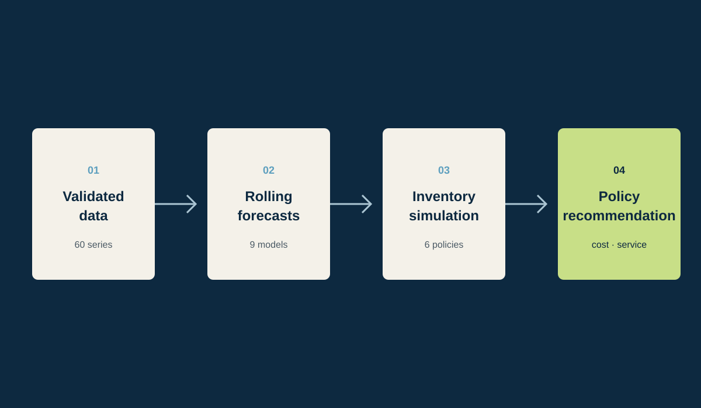

IT Inventory Decision Support
A Python/FastAPI demonstrator connecting data validation, rolling-origin forecasting, inventory simulation, and policy recommendations for IT equipment.
60 department–equipment series
9 models · 6,480 evaluations
6 inventory policies
Python · FastAPI
Forecast accuracy alone does not make an inventory decision.
IT equipment requests differ across departments and item types, while sparse histories and irregular demand make model selection difficult. The operational question was therefore broader than prediction: how can data checks, forecasts, replenishment policies, and cost–service trade-offs be connected in one reproducible workflow?

Build one chain from raw series to operational recommendations.
- Validate schema, missing values, temporal consistency, and department–equipment identifiers.
- Evaluate nine forecasting approaches through rolling-origin splits rather than a single train/test cut.
- Translate forecasts into six replenishment policies with explicit holding, purchasing, emergency-order, and service assumptions.
- Expose the results through a FastAPI demonstrator designed to compare policy behavior, not only model rankings.
Separate predictive quality from decision quality.
The benchmark produced 6,480 out-of-sample forecasts across 60 department–equipment series. Each candidate policy was then evaluated on simulated demand paths using both cost and service indicators. This prevents a low forecasting error from being treated automatically as the best operational choice.
A working prototype with quantified synthetic evidence.
Within the synthetic validation environment, the minimum-stock policy reduced modeled total cost by 21.2% and emergency units by 92.5% relative to corrective purchasing. These figures demonstrate the behavior of the prototype under stated assumptions; they are not claimed as realized organizational savings.
The main contribution is the traceable connection between data quality, model evaluation, policy simulation, and a decision recommendation—not a single headline percentage.